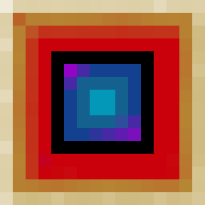
Enchant Transfer
Extract, transfer, and combine enchantments through Magic Cards — now with colored cards, attachable modules, and an XP conversion system.
Requires: Fabric Loader and Fabric API · Minecraft 26.2 | 1.21.11
Languages: English · Español · Português (Brasil)* · Русский* · 简体中文* (*pending review)
CurseForge · Modrinth · GitHub · Issues


Enchant Transfer adds a craftable block — the Transfer Table — that lets you extract enchantments from any item into individual Magic Cards, apply those cards to other compatible items, and combine two cards of the same enchantment and level to upgrade them. All operations are free (no XP cost), and vanilla enchantment compatibility rules are respected.
Version 2.0 introduced the Module System: specialized blocks that attach to the Transfer Table on any face, extending its capabilities.
Version support
New features and modules are developed for Minecraft 26.x only. The 1.21.11 version (v2.0.x) is in maintenance mode and will only receive critical bug fixes.
Transfer Table
The central block of the mod. Place it and right-click to open the enchantment interface — or attach modules to extend its functionality.
 Gold IngotGold IngotGold Ingot
Gold IngotGold IngotGold Ingot RedstoneRedstoneRedstone
RedstoneRedstoneRedstone Coal / Charcoal
Coal / Charcoal DiamondCoal / Charcoal
DiamondCoal / Charcoal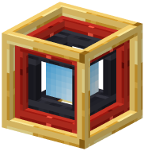
Transfer TableRequires an iron pickaxe or better to mine (the same applies to the Infusion Coil and the Zinc Smelter).
The 3D model reflects its recipe — gold on the outer edge, redstone in the middle ring, carbon-black inner layer, and a blue diamond core that glows from every angle.
Core Features
Extract
Remove enchantments from any enchanted item or book. Each enchantment becomes its own Magic Card, color-coded by category.
Apply
Place a Magic Card and a target item in the Transfer Table. The enchantment transfers instantly, respecting vanilla incompatibility rules.
Combine
Two cards of the same enchantment and level produce one card of the next level, up to vanilla maximum. Stacks work too — 5 + 6 cards yields 5 upgraded and 1 remainder.
Zero cost
All Transfer Table operations — extraction, application, and combination — are completely free. No XP, no materials consumed.
Module System
The Transfer Table now works as a hub. Specialized module blocks can be placed on any of its 6 faces. Right-click the Transfer Table to open the Selector Screen — a visual hub showing all connected modules with their real-time status.
- Up to 6 modules per Transfer Table (one per face)
- Each module type adds different functionality
- Navigate between the hub and any module using the dot navigation bar
- Modules show live status in the Selector — processing progress, tank levels, and connection state
GUI Screens
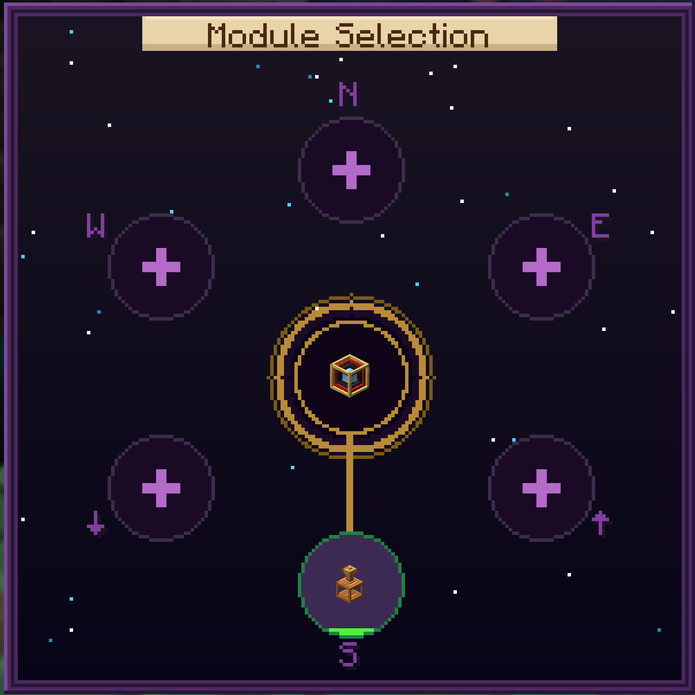
Selector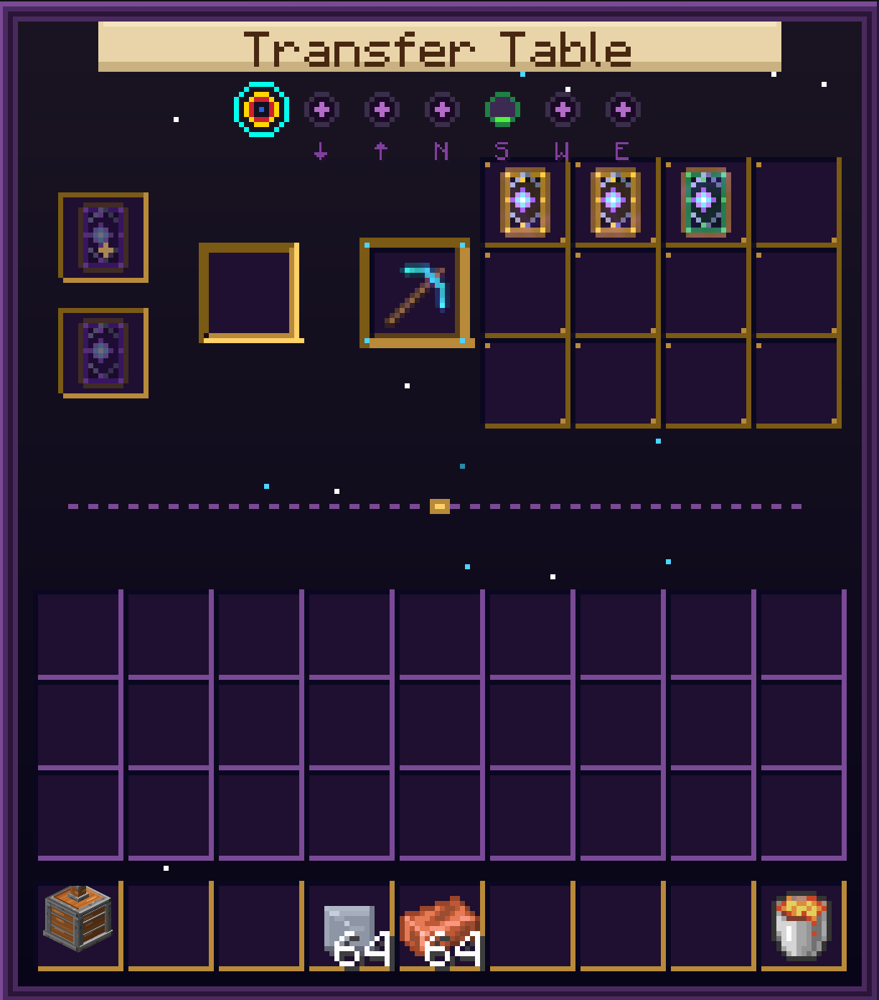
Transfer TableLeft: Selector hub with module sockets. Right: Transfer Table core for enchantment operations. Dynamic elements are drawn by code at runtime.
Typed Magic Cards
Magic Cards are now color-coded by enchantment category. When you extract an enchantment, the Transfer Table automatically produces a card of the matching color.
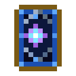
Protection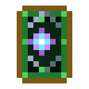
Nature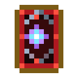
Combat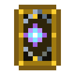
Utility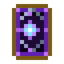
Arcane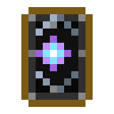
Curse| Card | Category | Enchantments |
|---|---|---|
| Blue | Protection | Protection, Fire Protection, Blast Protection, Projectile Protection, Feather Falling |
| Green | Nature | Respiration, Aqua Affinity, Depth Strider, Silk Touch, Fortune, Luck of the Sea, Lure |
| Red | Combat | Sharpness, Smite, Bane of Arthropods, Impaling, Fire Aspect, Looting, Thorns, Sweeping Edge, Knockback, Density, Breach, Lunge |
| Yellow | Utility | Efficiency, Unbreaking, Infinity, Power, Punch, Flame, Multishot, Piercing, Quick Charge |
| Purple | Arcane | Channeling, Riptide, Loyalty, Frost Walker, Wind Burst, Mending, Swift Sneak, Soul Speed |
| Black | Curse | Curse of Vanishing, Curse of Binding |
Card Decks New
Brass-bound decks that store Magic Cards of one type. Place them in a Deck Lectern near an Enchanting Table and the table gains power and starts favoring what you've stored.
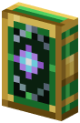
Nature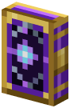
ArcaneThe card is consumed and sets the deck's type. The Rarity wildcard uses a Curse (black) card.
How to use
- Right-click a card onto the deck (or the deck onto a card) to store it, like a bundle
- Right-click with a deck in hand to open it: its cards in a grid, with a points bar and a reserve bar, to move cards in and out at a glance (Shift + click works). The 64-point limit still applies
- Right-click with an empty cursor to take the last stack back out
- Each deck only takes cards of its own type; the Rarity wildcard takes Curse cards
- A level N card is worth 2N−1 points (the same ratio as combining). Each deck holds up to 64 points
Deck Lectern
The block that holds your decks: a low brass base with a tilted velvet tray for 3 decks, under a glass bell. Place lecterns where regular bookshelves would go around an Enchanting Table; one ring of 16 at table height already reaches the cap of 15.
Redstone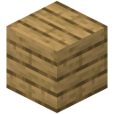
Planks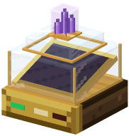
Deck Lectern- Placement: only counts at the same height as the enchanting table. Its glass bell fills the whole column, so nothing can be placed on top of it (and it can't go under a block) — that's why it's worth two bookshelves
- Right-click opens a small screen with 3 deck slots; hovering the amethyst gem shows what the lectern gives a table on its own, next to each maximum (category and enchantment factors, power, wear reserve)
- Lamps, one per slot: dark brown (no deck), light (deck without cards), emerald (deck with cards)
- Off by default. Shift + right-click switches it on (it needs a deck with cards) or off: while it's on, the amethyst on top glows and runes fly to the enchanting table. It switches itself off when its decks run out of cards, never on
At the Enchanting Table
| Effect | How it works |
|---|---|
| Power | A full Deck Lectern counts as two bookshelves — the two that would stack in its column (every 3 decks holding cards = 2). They add up with regular bookshelves; the vanilla cap of 15 still applies, so 8 full lecterns alone reach level 30 |
| Category decks | Favor their category, and even more the exact enchantments stored as max-level cards (Efficiency V, Fortune III, Silk Touch I…) — the category up to ×3, the exact enchantment up to ×15 in all. Strength builds up with the points stored: fast at first, in full with one full deck (64 points). A library with every category in equal parts barely changes anything |
| Rarity wildcard | Favors rare enchantments (weight ≤ 2), the rarer the more (Silk Touch, Thorns, Infinity…) |
| Wear | Decks pay, in card reserve, only for what their bonus brings in. Each card holds as much reserve as its points (a full deck: 64); each marked enchantment costs 20% of a max-level card of it, scaled by the level obtained — in full for an exact bonus, half for a category or Rarity bonus — split among the deck kinds that boosted it and taken from a started card, then the lowest-level ones. Options the decks can't pay for are disabled. Worn cards show a bar, work normally at the Transfer Table, and combining two adds up what they had left |
| Influence mark | Options changed by the decks show a small card in their top-right corner and an Influenced by card decks line in their tooltip |
No marks? That's normal
Decks tilt the odds, they don't pick for the table: when it would have rolled the same enchantment anyway, the option isn't marked and costs no card. Some rolls show no marks at all — you'll see more with fuller, more specialized decks and higher table levels. The rolls only change after you enchant something, so re-placing the item shows the same options.
Location affinity
Decks resonate with where the table is. Affinity multiplies the deck's extra effect (capped at ×3) and never affects a table without that kind of deck.
| Where | Deck | Boost |
|---|---|---|
| Nether | Combat | ×2 (Fire Aspect ×3) |
| Nether | Protection | Fire & Blast Protection ×1.5 |
| Nether | Utility | Flame ×1.5 |
| Nether | Rarity | ×1.5 |
| End | Arcane | ×2 |
| Oceans & rivers | Nature | Water enchantments ×1.5 |
| Forests, jungles & taigas | Nature | Fortune & Silk Touch ×1.5 |
For modpacks
Affinities are datapack JSON files in data/<namespace>/enchanttransfer/library_affinity/ and reload with /reload. Add rules for any dimension or biome, including other mods':
{
"deck": "enchanttransfer:card_deck_purple",
"dimension": "twilightforest:twilight_forest",
"enchantments": ["minecraft:loyalty"],
"multiplier": 2.0
}deck and multiplier are required; dimension, biome (id, list or #tag) and enchantments are optional.
Zinc Smelter
A standalone steampunk furnace for zinc processing and brass alloy creation. The Zinc Smelter is an ornate kiln made of copper, brass, iron, and glass with a viewport, decorative bands, and a chimney that emits smoke and lava particles when lit.
 Iron IngotIron IngotIron Ingot
Iron IngotIron IngotIron Ingot Copper
Copper Glass PaneCopperCopper
Glass PaneCopperCopper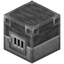
Blast FurnaceCopper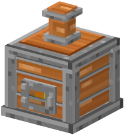
Zinc SmelterNew Materials
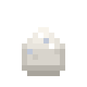
Zinc Oxide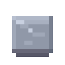
Zinc SheetProcessing Chain
The Zinc Smelter accepts up to two inputs and one fuel source. Three smelting recipes form a material chain that produces Brass Ingots — required to craft the Infusion Coil.
CoalCopper IngotFuel
 Blaze Rod
Blaze Rod
The Zinc Smelter only accepts Lava Buckets and Blaze Rods as fuel — no coal or wood. Lava Buckets return an empty bucket after consumption.
GUI
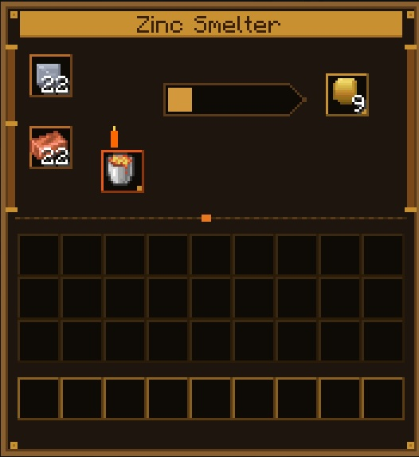
Zinc SmelterSteampunk-themed interface with copper input slots, a lava-bordered fuel slot, and brass output slot. Fire indicator and progress arrow animate during smelting.
Infusion Coil
The first module for the Transfer Table. A vertical flask made of copper, brass, and glass that converts Magic Cards into XP.
CopperCopperCopperCopperCopperHow it works
- Insert a Magic Card into the card slot — the coil processes it over ~10 seconds
- XP is stored in an internal tank (1,000 XP capacity)
- Place glass bottles in the bottle slot to extract XP as Bottles o' Enchanting (7 XP per bottle)
- Unenchanted cards yield a minimum of 5 XP; enchanted cards yield more based on their enchantment
Tip
The Infusion Coil stays vertical regardless of which face it's attached to. The copper connector stub always points toward the Transfer Table.
GUI
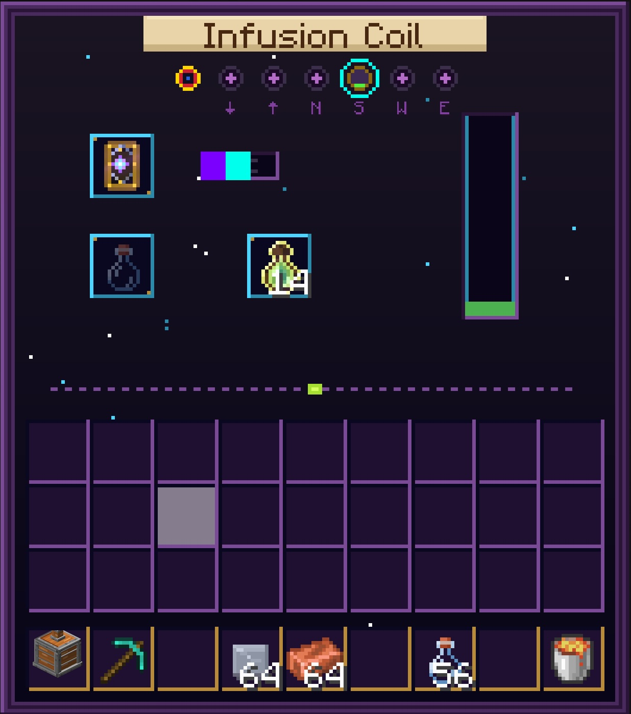
Infusion CoilCard input slot, XP tank with fill level, and bottle slot for extracting Bottles o' Enchanting.
Installation
| Mod version | Minecraft | Java | Fabric Loader | Fabric API | Status |
|---|---|---|---|---|---|
| 3.1.x | 26.2 | 25 | ≥ 0.19.3 | 0.158.0+26.2 | Active development |
| 2.0.x | 1.21.11 | 21 | ≥ 0.19.2 | 0.141.4+1.21.11 | Maintenance (critical bug fixes only) |
- Make sure Minecraft runs with the Java version listed for your Minecraft version
- Install Fabric Loader for your Minecraft version
- Download Fabric API for the same Minecraft version and place it in the
mods/folder - Download the matching Enchant Transfer file (3.1.x for 26.2, 2.0.x for 1.21.11) and place it in
mods/as well - Launch Minecraft with the Fabric profile
Fabric API is required
The mod will not start without it. Make sure the mod file, Fabric API, and Fabric Loader all match your Minecraft version.
Translations
The mod is available in English, Español, Português (Brasil), Русский and 简体中文. The Portuguese, Russian and Chinese translations are pending review by a native speaker.
Do you speak one of them? Help us review the translations or add your own language: open an issue or a pull request editing the language files.
Compatibility with 3.0.x worlds
Worlds created with Enchant Transfer 3.0.x are fully compatible: nothing in them changes, and an Enchanting Table without Deck Lecterns nearby works exactly like vanilla.
Cards extracted before 3.1 keep their color (e.g. yellow Mending, green Soul Speed, or blank Knockback cards) but still go into the deck of their current category — decks check the enchantment, not the card color.
Compatibility with 1.0.x worlds
Worlds created with Enchant Transfer 1.0.x are fully compatible. Existing Transfer Tables keep working — the block ID hasn't changed.
Old Magic Cards stored in chests retain their enchantment data. They will appear as the generic (blank) card variant; their functionality is unchanged. New cards extracted after updating will automatically use the color-coded system.
Changelog — 3.1.2
- Card reserve — Decks no longer lose whole cards at random: each card holds a reserve (its points) that marked enchantments wear down gradually, in proportion to the level obtained and to how much each deck kind boosted it. Options the decks can't pay for are disabled
- Exact bonus from max-level cards — Every card favors its category; only max-level cards favor their exact enchantment
- Rarity wildcard — Only favors and is only worn by rare enchantments (Fortune, Looting, Silk Touch, Thorns…)
- Stronger deck bonus — The category part and the exact-enchantment part now multiply (category up to ×3, exact up to ×15 in all), and strength builds up with the points stored — fast at first, so even a few level I cards show, and in full with one full deck
- Deck screen — Right-click with a deck in hand to open it and organize its cards at a glance; the deck's tooltip shows its reserve and each worn card's
- Lectern contribution — The amethyst gem's tooltip in the lectern screen shows what its decks give a table, next to each maximum
- Deck Lectern = two bookshelves — A full lectern now counts as the two bookshelves stacked in its column. It only counts at the table's own height, and nothing can be placed on top of it
- Influence mark — Enchanting Table options changed by the decks show a small card and an Influenced by card decks tooltip line
3.1.1
- Translatable tooltips — Module tooltips in the Selector, Transfer Table and Infusion Coil screens (empty sockets, directions, XP level, Idle/Infusing) are no longer hardcoded in English
- New languages — Simplified Chinese (zh_cn), Brazilian Portuguese (pt_br) and Russian (ru_ru)
3.1.0
- Card Decks — New brass-bound decks that store Magic Cards of one type: Protection, Nature, Combat, Utility, Arcane, and a Rarity wildcard filled with Curse cards. Crafted with 2 Brass Ingots, 2 Leather and 1 card of the deck's type (the card is consumed). Store and take cards with right-click, like a bundle
- Deck Lectern — New block that holds 3 decks on a tilted tray under a glass bell. A lamp per slot shows whether each deck has cards, and Shift + right-click toggles it (the amethyst on top glows while active). Every 3 decks holding cards count as one bookshelf of enchanting power, adding up with regular bookshelves (vanilla cap of 15 still applies)
- Steered enchanting — Decks make the table favor their category, and even more the exact enchantments stored (up to ×3 with a specialized library). The Rarity wildcard favors rare, low-weight enchantments
- Location affinity — Decks resonate with where the table is: Combat ×2 in the Nether (Fire Aspect ×3), fire protections and Flame ×1.5 in the Nether, Arcane ×2 in the End, Nature's water enchantments in oceans and rivers, Fortune and Silk Touch in forests, jungles and taigas
- Datapack-driven affinities — Affinity rules are JSON files in
data/<namespace>/enchanttransfer/library_affinity/, so modpacks can add rules for any dimension or biome; they reload with/reload - Deck wear — Each enchantment the library helps with has a 20% chance to consume the cheapest matching card
- 26.2 enchantments categorized — Knockback, Density, Breach, Lunge, Flame, Multishot, Piercing, Quick Charge, Luck of the Sea, Lure and Wind Burst now have card colors
- Arcane = rare magic — All treasure enchantments (Mending, Swift Sneak, Soul Speed, Frost Walker, Wind Burst) are now Arcane cards. Cards already extracted keep their color and still go into the matching deck
- Lighter website — 3D block previews are now static images, much faster on phones
Previous versions
3.0.0
- Port to Minecraft 26.2 — Built against Fabric Loader 0.19.3 and Fabric API 0.158.0+26.2
- Java 25 required — Minecraft 26.2 needs Java 25 (the 1.21.11 version keeps using Java 21)
- Official Mojang mappings — Codebase migrated from Yarn to Mojang mappings (Fabric Loom 1.17)
- New render pipeline — Block entity renderers (Transfer Table, Infusion Coil, Zinc Smelter) and all GUI screens migrated to the 26.2 deferred rendering system
- Translucent blocks — Infusion Coil and Zinc Smelter now declare their translucent render type in their block models
- Fabric API dependency — Declared with the new
fabric-apimod id (26.2 no longer provides the legacyfabricid) - Creative tab — The mod's creative tab is now populated correctly on 26.2
- No gameplay changes — Same blocks, items, recipes, and mechanics as 2.0.2
2.0.2
- Zinc Smelter can now be mined with a pickaxe; hardness adjusted
2.0.1
- Added recipe book advancements for all crafting recipes
2.0.0
- Module System — The Transfer Table is now a modular hub that accepts specialized blocks on any of its 6 faces
- Infusion Coil — First module: converts Magic Cards into XP, fills glass bottles into Bottles o' Enchanting
- Zinc Smelter — Steampunk furnace for zinc processing: Calcite → Zinc Oxide → Zinc Sheet → Brass Ingot
- New Materials — Zinc Oxide, Zinc Sheet, and Brass Ingot with custom textures and item models
- Typed Magic Cards — 6 color-coded card variants by enchantment category (Protection, Nature, Combat, Utility, Arcane, Curse)
- Selector Screen — New hub GUI with live module status, wires, and processing indicators
- Redesigned GUIs — Dark starry aesthetic, golden/cyan accents, navigation dot bar, ghost input hints
- New 3D models — Custom Transfer Table model with stepped funnel and emissive diamond core; Infusion Coil flask with copper/brass/glass and fluid renderer
- Block Entity Renderers — Pulsing blue core for the Transfer Table; fluid fill animation, cap glow, and directional connector for the Infusion Coil